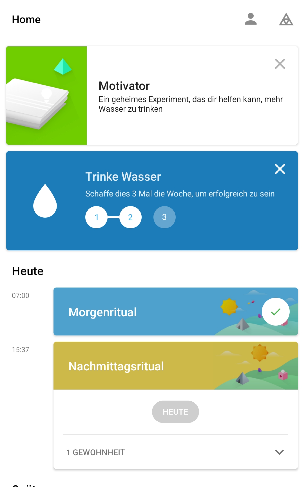
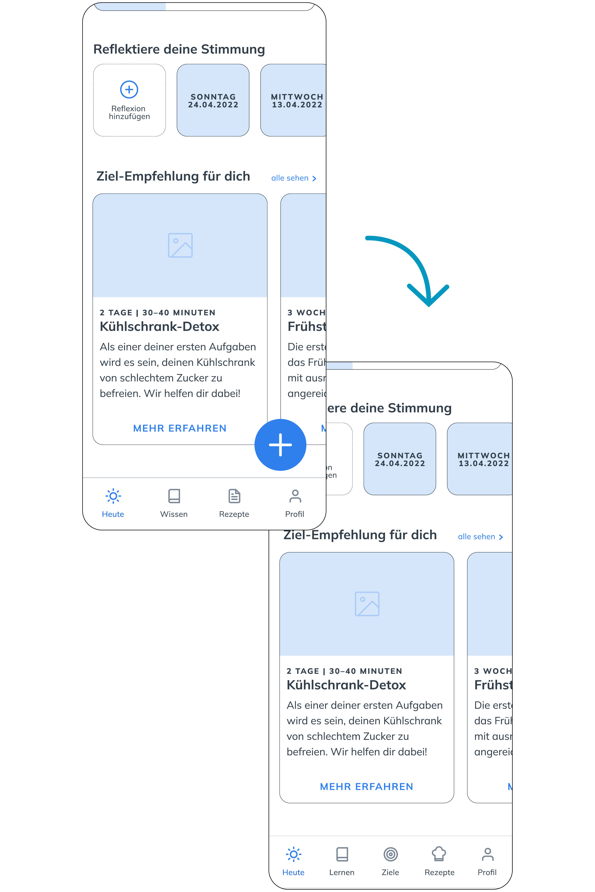

Im Rahmen meiner Diplomarbeit setzte ich mich mit dem Thema des Zuckerkonsums auseinander und suchte eine nachhaltige Lösung, Menschen auf ihrem Weg in einen Alltag mit weniger Zucker zu begleiten. Das Endprodukt basiert auf verschiedenen Methoden des Human-Centered Design Prozesses, welcher nachfolgend veranschaulicht wird.
Kontext
Themenwahl
Meine Überlegungen zu einem möglichen Thema meiner Diplomarbeit, führten mich zunächst ein paar Jahre zurück, zu einem persönlichen Zucker-Erlebnis. Eine ehemalige Arbeitskollegin, hatte sich für einen längeren Zeitraum zuckerfrei ernährt. In diesen Zeitraum fiel auch mein Geburtstag und ich entschied mich einen zuckerfreien Kuchen zu backen, den sie mit uns mitessen konnte. Dieses Ereignis war ausschlaggebend, mich dazumal näher mit dieser Thematik auseinanderzusetzen. Jedoch ist mir schon damals aufgefallen, dass es keine App gab, die mich genügend abgeholt hat, das Ziel «zuckerfrei» nicht aus den Augen zu verlieren.
Dieses Ereignis war meine Basis, mich in meiner Diplomarbeit mit folgender Herausforderung vertieft auseinanderzusetzen:
Wie kann eine App die Bevölkerung dabei unterstützen, das Ziel zu erreichen, Ihren Zuckerkonsum nach individuellem Wunsch zu reduzieren?
Zuckerkonsum
Wenn es um unsere Nahrung geht, kommen wir praktisch täglich mit ihm in Berührung – dem Kristallzucker oder auch besser bekannt als Haushaltszucker.
Könntest du auf einen Schlag 32 Stück Würfelzucker essen? Wahrscheinlich eher nicht und dankend ablehnen. Das wäre ungesund, viel zu süss und übergewichtig würde es auch noch machen. Da hast du Recht: 20% unserer benötigten Energie nimmt der Durchschnittsschweizer täglich in Form von Zucker auf – genau diese 32 Stück Würfelzucker = 128 Gramm Zucker, was umgerechnet ungefähr 40 Kilo pro Jahr bedeutet (Beobachter, 2014).
Die Schweiz platziert sich somit mit ihrem Zuckerkonsum, im Vergleich zu anderen Ländern weltweit, auf Platz 5. Die Empfehlung der Weltgesundheitsorganisation WHO den menschlichen Energieverbrauch mit Zucker zu decken, liegt bei zehn oder besser nur fünf Prozent. Verbrennt eine Person also 2000 Kalorien am Tag, dürften 50 Gramm Zucker oder eben 25 Gramm aufgenommen werden (SRF News, 2019).
Zucker und seine Folgen
Auch wenn uns Zucker kurzfristig glücklich macht, macht er genauso schnell abhängig und wird ab diesem Zeitpunkt für unsere Gesundheit gefährlich.
Fettleibigkeit und schlechte Zähne sind nur ein kleiner Teil der negativen Folgen von übermässigem Zuckerkonsum. Er begünstigt unter anderem auch die Schädigung von Organen wie z. B. der Leber (Verfettung), einen zu hohen Blutdruck, Erkrankungen vom Herz-Kreislauf oder Diabetes Typ 2 (Insulinresistenz). Zudem wird der Alterungsprozess von Gefässen sowie der Haut angeregt und vorangetrieben. Grundsätzlich ist künstlich hinzugefügter Zucker in unserer Nahrung überflüssig. Die Energie, welche unser Körper braucht, kann beispielsweise auch aus Fetten oder Proteinen gewonnen werden (SRF News, 2019).
Folgende Fragen habe ich mir im Verlauf meiner Recherche gestellt: Warum wird Zucker überhaupt in unseren Lebensmitteln hinzugefügt und weshalb kann er nicht einfach weggelassen werden? Ganz einfach – weil es besser schmeckt. Zucker dient unseren Nahrungsmitteln als Geschmacksträger, macht sie länger haltbar oder wird als preiswerter Füllstoff verwendet (SRF News, 2019).
Der verstecke Zucker
Bei Lebensmitteln mit zu viel Zucker wie gesüssten Getränken, Süssigkeiten, Schokolade & Co. sind wir uns auf den ersten Blick bewusst, dass es sich um ungesunde Nahrung handelt und diese in Massen gegessen werden soll. Doch wie sieht es mit den sogenannten «versteckten» Zuckerquellen aus? Ein «gesundes» Müsli beispielsweise oder eine «salzige» Lasagne. Hier muss zwingend auf die Zutatenliste auf der Verpackung geachtet werden. Nicht alles, was auf den ersten Blick als gesund gilt oder nicht süss schmeckt, enthält keinen Zucker (SRF News, 2019).
In diesem Video werden die Risiken von übermässigem Zuckerkonsum nochmals kurz erklärt:
Wo steckt wieviel Zucker drin?
Coca Cola (0,5 Liter)
18 Würfelzucker = 54 Gramm Zucker
Tomatensauce (1 Glas)
8 Würfelzucker = 24,4 Gramm Zucker
Orangesaft (1 Liter)
29,3 Würfelzucker (88 Gramm Zucker)
Nutella (1 Glas)
85 Würfelzucker = 253,3 Gramm Zucker
Tiefkühlpizza
6 Würfelzucker = 17,8 Gramm Zucker
Fazit
Es bedarf einer grossen Eigenverantwortung die jeweiligen Inhaltsstoffe unserer Nahrungsmittel zu studieren und richtig zu verstehen. Der Zucker wird so schnell nicht aus den Regalen verschwinden, hierfür hängt zu viel wirtschaftliches Interesse daran (z. B. Umsätze oder Arbeitsstellen). Jedoch sollte jeder für sich und seine Gesundheit selbst einstehen. Genau hier setze ich an: Mir war es wichtig, bei der Erarbeitung der finalen App den Anwendenden und seine Bedürfnisse in den Mittelpunkt zu stellen. Somit fing ich an, die aktuelle Landschaft der Applikationen zu studieren und die Ergebnisse zu sammeln.
Recherche
Benchmarkanalyse
Da mein künftiges Produkt eine App sein sollte habe ich mich auf dem mobilen Markt umgesehen und den Google PlayStore (ich besitze ein Android Mobiltelefon) nach möglichen bereits vorhandenen Lösungsansätzen in der immensen App-Vielfalt durchsucht.
Bei der Recherche haben sich drei Gruppen von App-Arten herauskristallisiert, welche ich jeweils anhand eines Beispiels kurz genauer erläutern möchte. Die Inhalte der Screenshots dienten mir später als Inspiration für Designs sowie Funktionen meines Lo-Fi Prototypen.
Die App Zuckerfrei Challenge setzt stark auf die Protokollierung des eigenen Zucker-Konsums.
Pro & Contra: + «Nicht gegessen» Raum + Statistiken + Modus wählbar (Tage) – Werbung während Nutzung – braucht viel Eigeninitiative – Design sehr schlank
2

Coaching-App
Mit der App Fabulous werden neue Gewohnheiten in den Alttag integriert. Pro & Contra: + Motivation im Alltag + ansprechendes Design + tägliche Push-Notifications – kostenpflichtig – viel Musik & Sound-Effekte – Reisen zu wenig individuell
3
Ernährungs-App
Bei Foodvisor geht es in erster Linie darum, die eigene Ernährung zu optimieren. Pro & Contra: + personalisiertes Programm + Strichcodes von Nahrungsmitteln scannbar + persönliche Beratung – sehr langer Fragebogen – Funktionen begrenzt – proaktiv Essen hinzufügen
Ideenfindung
Auf der Basis der getesteten Apps ist mir aufgefallen, dass die in meinen Augen perfekte App noch nicht existiert. Somit bin ich mit einem Mindmap und anschliessender Kreativmethode in die Ideenfindung gestartet.
Mindmap Zu Beginn habe ich ein Mindmap erstellt, um meine Gedanken zum Thema «zuckerfrei» App aufzuschreiben.
Kreativ-Methode Mit der Brainstorming-Methode «Crazy-8» werden auf ein A4-Blatt (acht mal in gleich grosse Bereiche gefaltet) während 8 Minuten die acht Felder mit je einem Lösungsansatz für meine Fragestellung skizziert. Aufgrund der vorgegeben Zeitvorgabe sollen Ideen gezeichnet und visuell auf Papier gebracht werden.
Nach dem Skizzieren konnte ich für mich bereits einige Lösungsansätze definieren:
Informationen über Zucker finden
Überblick über abgeschlossene Themen (Dashboard)
Begleitung bei neuen Herausforderungen
Fragebogen zur benutzenden Person
Personas
Um meine Zielgruppe besser zu verstehen, habe ich zwei Personas entwickelt, welche mir dabei helfen sollen, das Verständnis der Zielgruppe zu verstärken.
Definition Mit der Beurteilung der Painpoints und Bedürfnissen der beiden Personas, fällt mein Fokus auf die Persona Maria, da sie zum Thema Zucker und dessen Folgen noch keine Informationen hat. Ihr ist das Problem des übermässigen Zuckerkonsums bewusst und möchte ihr Verhalten ändern. Im Gegensatz zu Silvan, welcher zur Gruppe der aufgeklärten Personen gehört und bereits eine App zum bewussten Einkauf von Nahrungsmitteln verwendet. Zudem bietet sein Arbeitgeber regelmässige Kurse zum Thema Ernährung an. Maria hätte gerne eine langfristige Lösung um ihren Ernährungsstil anzupassen. Somit fiel meine Wahl der Zielgruppe auf diejenige von Maria:
Über Maria Mutig Maria ist 31 Jahre alt und lebt zusammen mit einer Freundin in einer Wohngemeinschaft mitten in Zürich. Sie versucht in ihren Alltag regelmässig Sport und eine ausgewogene Ernährung zu integrieren. Dennoch merkt sie, dass sie oft müde ist, unter Kopfschmerzen leidet und in Stresssituationen zu einem süssen Snack greift. Ihre Gesundheit ist ihr wichtig und sie ist daran interessiert ihren Zuckerkonsum gezielt zu reduzieren. Aktuell weiss sie jedoch noch nicht, wie sie dieses Thema angehen soll.
Bedürfnisse Ein einfacher Zugang zu mehr Informationen zum Thema Zuckerreduktion würde Maria sich wünschen. Dies soll aufgrund ihrer Berufstätigkeit gerne auch orts- und zeitunabhängig sein. Zudem ist sie eine neugierige Person und würde gerne mehr über die Folgen von übermässigem Zuckerkonsum erfahren.
Painpoints Ihr fällt es schwer alte Verhaltensmuster zu durchbrechen oder aufzulösen. Maria hat wenig Kenntnisse, was das Thema Zucker betrifft, was zur Folge hat, dass sie oder ihre WG-Mitbewohnerin das einkaufen was ihnen schmeckt ohne genau auf den Zuckergehalt zu achten. Sie braucht einen Sinn und Begleitung auf dem Weg zu ihren Zielen.
Problem
Meine Persona Maria scheint der Zugang zu einer zuckerfreie Ernährung zu finden eher eine grosse Hürde zu sein. Es wäre viel Recherche und Eigeninitiative zu diesem Thema gefordert. Zudem möchte sie nicht für jeden Bereich (z. B. Rezepte, Theorie, Aufgaben, etc.) je eine eigene App herunterladen und diese mühsam über einen längeren Zeitraum gleichzeitig benutzen.
Konzeption
Challenge
Aufgrund meiner umfangreichen Recherche wurde folgende Challenge entwickelt:
Wie kann eine App die Bevölkerung dabei unterstützen, das Ziel zu erreichen, Ihren Zuckerkonsum nach individuellem Wunsch zu reduzieren?
User Journey
Szenario Unsere Userin Maria hat gelesen, dass übermässiger Zuckerkonsum dem Körper nicht guttut und würde gerne den Zuckerkonsum in ihrem Alltag reduzieren. Aktuell weiss sie jedoch noch nicht wie sie dies angehen soll und sucht im Web nach einer Lösung für ihr Anliegen.
Konzept der Applikation
Die App «SWEETLESS» dient in erster Linie dazu, Menschen beim Wunsch weniger Zucker zu konsumieren zu unterstützen und dabei helfen alte Gewohnheiten zu verändern. Die Nutzenden sollen im Bezug auf Zucker ein langfristiges Umdenken bekommen und lernen, dass Sie es schaffen können. Ziel soll es sein, dass eine Reduzieren von Zucker zu einer alltägliche Gewohnheit wird.
Da die Personengruppe das Mobiltelefon als festen Bestandteil ihres Lebens sieht und viel unterwegs ist, wurde das Konzept für eine App entwickelt. So können Inhalte orts- und zeitunabhängig abgerufen werden.
Durch geschaltete Werbung auf den gängigen Social-Media-Kanälen, wird die Zielgruppe auf die App aufmerksam gemacht und wird im besten Fall mit Freunden oder Familie geteilt. Eine mögliche Werbekampagne zu diesem Produkt wird im Rahmen dieser Arbeit nicht behandelt. Zur Finanzierung würden Kooperationen mit externen Firmen genutzt werden, welche ihre zuckerfreien Produkte bzw. Aktionen direkt auf der App einbinden könnten. Auch auf dieses Konzept wird in dieser Arbeit nicht näher eingegangen.
Motivation Die App begleitet Benutzende Schritt für Schritt bei ihren persönlichen Zielen und macht den Umgang mit dem Thema Zucker so zugänglicher. Mittels Selbstreflexion wird die eigene Stimmung festgehalten und bietet die App einen zusätzlichen Anreiz auf sich selbst zu hören und zu achten. Einen weiteren Motivationsschub geben die sogenannten Motivationskarten. Diese beinhalten Fakten, Kurioses aber auch Zitate für die kleine Motivation für zwischendurch.
Information Eine Vielzahl an spannender Lektüre wird den Benutzenden zur Verfügung gestellt. Das Wissen zum Thema Zucker kann täglich sowie selbstständig erweitert werden.
Inspiration Tolle Kochrezepte erleichtern den Einstieg in einen Ernährung mit weniger Zucker. Zudem bieten Podcasts oder Videos, neue Anreize zum Thema zuckerfrei.
Komponenten-System schafft Routine Das Herzstück der App «SWEETLESS» sind die Ziele. Diese werden im Alltag eingebaut und bestehen immer aus vier Etappen mit einem jeweiligen Schwerpunkt. Durch den immer gleichen Aufbau eines Ziels entsteht für die Benutzenden eine Routine und Vertrautheit. Nachfolgend sind die einzelnen Komponenten im Detail aufgeführt:
Im Abschnitt Applikation werden die einzelnen Funktionen der App nochmals im Detail mittels Videovorschau demonstriert und mit einem kurzem Text erklärt.
Lo-Fi Usability Testing
Nachdem alle Wireframes erstellt waren, führte ich zwei User-Testings durch. Es wurden zwei Personen meiner Zielgruppe (männlich, 32 Jahre & weiblich, 31 Jahre) gebeten die App nach folgenden Flows zu benutzen:
Melde dich mit deiner Mail-Adresse an und beende den Flow beim Startbildschirm
Suche ein Rezept zum Kochen
Schau dir die aktuellen Motivationskarten an
Starte ein neues Ziel
Füge eine Stimmungsreflexion hinzu
Ändere deinen Benutzernamen
Höre dir einen Podcast an
Lerne etwas über alternative Zuckerarten
Zudem wurden sie gebeten, mir laut die eigene Vorgehensweise, Gedanken und Erwartungen mitzuteilen. Zur Vorgehensweise: Testing mit erster Person, danach die Anpassungen einpflegen. Anschliessend das gleiche Vorgehen nochmals mit der zweiten Person. Folgende drei Learnings haben sich nach den Testings herauskristallisiert:
Der runde blaue Kreis mit dem Plus am Ende des Screens konnte nicht eindeutig zugeordnet werden und wurde somit nicht angeklickt. Der Button war ursprünglich dazu gedacht, ein neues Ziel zu beginnen/hinzuzufügen.
Lösung
Als Lösung habe ich in der Tabbar einen neuen Reiter «Ziele» hinzugefügt, um das Missverständnis zu beheben.

Problem
Bei einem ersten Draft waren die unterschiedlichen Alter in Kategorien eingeteilt. Dies hat in dem Sinne einen Nachteil, dass Personen mit einem Altern von über 36 Jahren keine Einteilung mehr haben und so ein ungutes Gefühl hervorgerufen werden könnte.
Lösung
Die Anpassung dieses Problems wurde mit einer manuellen Eingabe des Alters behoben. So können Benutzende ihr Alter direkt mittels Tastatur eingeben.
Problem
Zu Beginn waren meine Etappen einzelner Ziele von 1 bis 4 nummeriert. Dies sollte als Wegweiser dienen. Beim Testing jedoch wurde dies als fixe Reihenfolge interpretiert, was so nicht angedacht war. Die Testperson hatte den Eindruck, die Schritte in der angegebenen Reihenfolge zu erfüllen.
Lösung
Dieses Problem wurde mit der Verwendung von Icons behoben. Die Benutzenden sehen nun passende Icons zu den vier Etappen-Bereichen. Innerhalb eines Ziels kann zwischen den einzelnen Etappen beliebig gewechselt werden und es besteht keine fixe Reihenfolge mehr.
Design
Farben
Bei der Farbwahl wollte ich farbpsychologisch einen Einfluss auf das Erscheinungsbild der App geben, denn jede Farbe kann im Menschen eine andere Emotion auslösen. Um beispielsweise den Appetit zu zügeln kommen in erster Linie Blau-, Violett- oder Grautöne in Frage. Aus diesem Grund ist die tragenden Hauptfarben bei meiner App ein Blauton. Um dennoch einen angenehmen und freundlichen Farbkontrast zu schaffen, wählte ich für die App als Akzentfarbe die Farbe Apricot.
Beim Fliesstext habe ich mich für einen etwas dünkleren Grauton entscheiden. So behält die App ihren leichten Eindruck.
Die jeweiligen Farbkombinationen von weisser Schrift und einer der Primärfarben als Hintergrund, besitzen denn AA Kontrast-Standard.
Komponenten & Pattern
Die Sammlung mit den verwendeten Komponenten (oben ein Auszug davon) und sich wiederholenden Elementen, sind aufeinander abgestimmt und sorgen so für ein harmonisches Nutzungserlebnis. Sie helfen für einen erleichterten Userflow und beschleunigen die Benutzung. Fehlermeldungen oder erledigte Aufgaben werden andersfarbig hervorgehoben und so visuell vom Rest abgehoben.
Typografie
Fredoka (Titelschrift) Bei der Schriftwahl für die Titel sowie Untertitel wollte ich einen verspielten Eindruck vermitteln, sodass die App in ihrem Look & Feel eine gewisse Verspielt- und Unbeschwertheit erhält. Die Fredoka vermittelt genau diesen Eindruck und hebt sich vom Lauftext durch ihre starke Strichstärke (Semi Bold) klar ab.
Open Sans (Lauftext) Meine Wahl für die passende Schrift des Lauftextes fiel auf Open Sans (Regular). Die serifenlose Schrift wurde im Laufe der Zeit für mobile Devices optimiert. Sie überzeugt mit ihren offenen Formen und verfügt auch in einer kleinen Schriftgrösse beste Lesbarkeit.
Logo
Beim Wording für einen passenden Namen zur App, bin ich verschiedenste Varianten durchgegangen (inkl. diverse Fremdsprachen). Ein Kriterium war, dass das Wort Zucker nicht eindeutig enthalten sein soll. Dies aus dem Grund, dass die App nicht zur Motivation zur Zuckeraufnahme anregen soll. Auf der Suche nach einem passenden Namen bin ich auf das englische Wort «sweetless» gestossen, das soviel bedeutet wie: ohne Süssigkeiten/Süsswaren. Dies erschien mir in diesem Kontext absolut passend als Naming.
Applikation
SWEETLESS – Für ein Leben mit weniger Zucker
Folgend werden die wichtigsten Funktionen der App im Detail durchgegangen, mittels Video demonstriert und mit einer kurzen Information ergänzt.
Bei der erstmaligen Benutzung, werden den Benutzenden die drei Grundsätze der App «SWEETLESS» kurz vorgestellt. Sollte bereits ein Account bestehen, kann das Onboarding übersprungen werden.
Account anlegen
Das Anlegen eines neuen Accounts ist schnell und unkompliziert mittels E-Mail-Adresse, aber auch Google oder Facebook möglich. Bei einer Erstanmeldung erscheint ein Pop-up mit einem Hinweis zur Zucker-Bezeichnung innerhalb der App.
Fragebogen
Bei der Erstanmeldung kann freiwillig ein kurzer Fragebogen mit drei Fragen (Alter, Geschlecht, Motivation) zur eigenen Person ausgefüllt werden. Dies dient der App dazu, die passenden Inhalte für Benutzende anzuzeigen. Diese Angaben können nachträglich noch geändert und angepasst werden. Nach dem Ausfüllen erscheint der Startbildschirm mit der täglichen Übersicht und die Benutzenden erhalten (bei der Erstanmeldung) eine Übersicht wie die Ziele konkret funktionieren.
Wissen2Go
Das Aneignen und Lernen für unterwegs bietet die orts- und zeitunabhängig Möglichkeit, täglich interessante Podcasts oder Videos bequem von unterwegs zu konsumieren. Dies im eigenen Tempo und genau dann wann Zeit vorhanden ist.
Selbstreflexion
Die Umstellung auf eine zuckerärmere Ernährung kann (insbesondere zu Beginn) physische wie auch psychische Auswirkungen haben. Hierfür bietet die App «SWEETLESS» die Möglichkeit und dieser Rubrik die aktuelle Stimmung, körperliche Veränderungen wie auch das Stresslevel anzugeben und falls gewünscht persönliche Gedanken niederzuschreiben. Die ausgefüllten Selbstreflexionen bleiben erhalten und können bei Bedarf wieder geöffnet werden.
Lernen
Der App «SWEETLESS» ist es ein Anliegen den Benutzenden die Theorie zum Thema Zucker zur Verfügung zu stellen. Nur so können Nutzende spezifisch und je nach Interesse das eigenen Wissen über dieses Thema erweitern und schärfen. Auch hier können Beiträge den eigenen Favoriten hinzugefügt werden, um sie so später schneller erneut zu öffnen. Zusätzlich wird die Kachel grün gekennzeichnet, damit auf einen Blick ersichtlich ist, welche Beiträge bereits gelesen/geöffnet wurden.
Rezepte
Das Kochen und Zubereiten von Speisen ist zu Beginn einer Umstellung auf weniger Zucker oftmals eine Herausforderung. Hier schafft die App «SWEETLESS»mit der Rubrik «Rezepte» die Möglichkeit, mittels Suchfeld oder Filterfunktion das passende Gericht zu finden. Direkt über die App kann für das Gericht eingekauft und mit Hilfe einer genauen Anleitung zubereitet werden. «SWEETLESS» Benutzende profitieren exklusiv von regelmässigen Rabatt-Angeboten oder Aktionen.
Profil und Einstellungen
In diesem ganz persönlichen Bereich können die Benutzenden die eigens abgespeicherten Favoriten sowie letzten Aktivitäten anschauen. Ausserdem können hier Einstellungen wie Benutzername, Sprache, Passwort oder Fragebogen geändert werden.
Geführtes Ziel | Auswahl & Theorie
Das Herzstück der App «SWEETLESS» sind die geführten Ziele. Diese bestehen immer aus vier Etappen (Theorie, Challenge, Rezepte, Wissen2Go), welche die Benutzenden mit den notwenigen Inputs, auf dem Weg in ein Leben mit weniger Zucker, begleitet. Den Benutzenden werden die Ziele in einer logischen Reihenfolge vorgeschlagen und bauen aufeinander auf. Die Etappen Theorie und Challenge sind Pflichtteile. Im Gegensatz sind die Rezepte und das Wissen2Go auf freiwilliger Basis.
In dieser Theorie-Etappe wird notwendiges Hintergrundwissen (unterschiedlich in der Anzahl) für die darauffolgende Challenge angeeignet um diese sicherer zu meistern.
Geführtes Ziel | Challenge
Das Gelernte aus der Theorie wird nun im Alltag angewendet, integriert und soll so zu einer neuen Gewohnheit werden. Die Challenge besteht oftmals aus verschiedenen Aufgaben und sind aufeinander aufbauend.
Geführtes Ziel | Rezepte
Für jedes geführte Ziel gibt es passend zum Thema eine bestimmte Anzahl an Rezepten, welche die Benutzenden einfach und unkompliziert nachkochen können. Weitere Rezepte finden Benutzende unter der Rezepte-Rubrik.
Geführtes Ziel | Wissen2Go
Als letzter Teil eines geführten Ziels, kommt zum jeweiligen Fokus-Thema, wissenswertes für unterwegs zum Einsatz. Hier wie auch bei den Rezepten werden Gamification-Elemente verwendet. In diesem Fall sind es die Lautsprecher, welche suggerieren, dass ein Multimedia Element konsumiert wurde. So wird auf einen Blick erkennbar, was bereits erledigt ist und wieviel noch offen ist.
Geführtes Ziel | Feedback-Fragebogen
Sobald die Theorie und die Challenges (Pflicht-Etappen) erledigt sind, wird ein Pop-up angezeigt. Hiermit werden die Benutzenden gefragt, ob das Ziel fortgesetzt werden soll oder ein Feedback dazu abgegeben werden möchte (das Ziel wird beendet). Beim Fragebogen können max. fünf Sterne als Bewertung abgegeben und bei Bedarf kann ein eigenes Feedback eingetragen werden. Das Ziel ist somit abgeschlossen, das erledigte Ziel wird markiert und die Benutzenden kriegen ein neues Ziel vorgeschlagen.
About
Diplomarbeit HF Interaction Design 2019 von Chantal Hugentobler
Im 6. Semester erarbeiten die Studierenden für den Abschluss als «diplomierte Gestalterin HF / diplomierter Gestalter HF, Fachrichtung Kommunikationsdesign, Vertiefung Interaction Design» eine Diplomarbeit. Das Thema ist frei wählbar und soll grafischer sowie dienender Natur sein. Die User-Experience der Diplomarbeit soll mind. 15 Minuten umschliessen.
Danksagung
An dieser Stelle möchte ich mich ganz herzlich bei all denjenigen bedanken, die mich während der Erarbeitung dieser Diplomarbeit unterstützt und motiviert haben. Eure Feedbacks, Testings, Inputs sowie Überlegungen habe mir dabei geholfen, das Produkt «SWEETLESS» zu entwickeln.